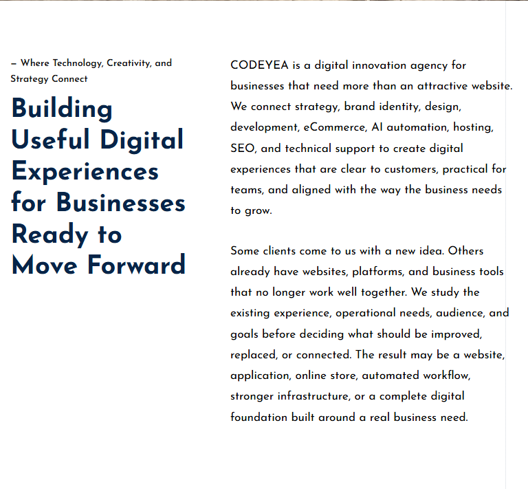
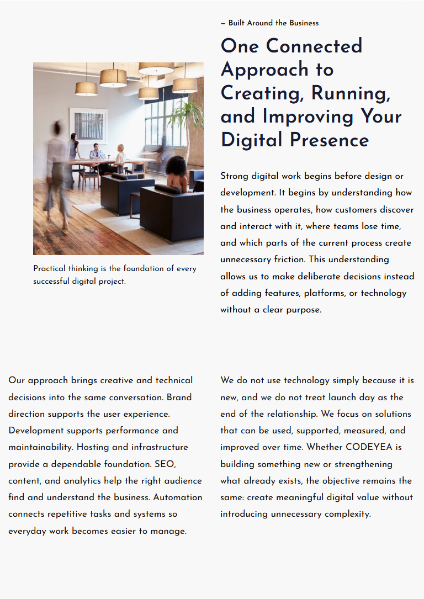
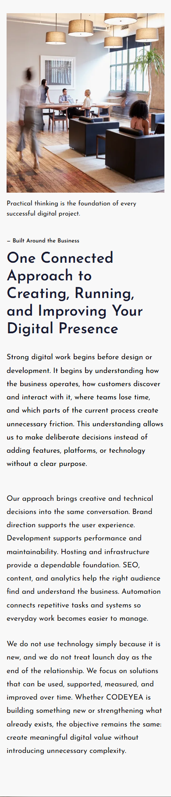
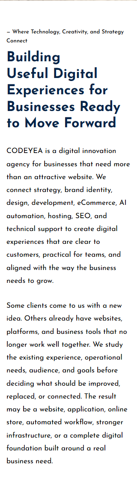

Three visual corrections — private draft 8
Agency begins its own left-aligned line. The desktop caption fits beside the image. The Introduction scroll decoration is removed entirely.
Content, images, motion and all measured section heights are unchanged. Build and TypeScript passed. No clipping or horizontal overflow at 1440, 768, 390 or 320px. Nothing published.
On smaller screens, Digital Innovation wraps naturally at the retained type size; Agency always starts separately. The approved horizontal caption treatment remains on tablet/mobile.
Private draft and scope checks · Viewport measurements
768px



390px



320px
